Charades · Animals · page 2/13 · all packs
Reject an image by adding its slug to public/charades/charades-animals/reject.txt (append ! to keep it word-only), then re-run node scripts/genimages.mjs.
1 2 3 4 5 6 7 8 9 10 11 12 13 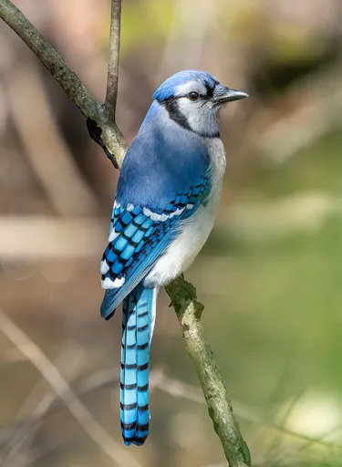
Blue jay blue-jayCC BY-SA 4.0 · Rhododendrites · source 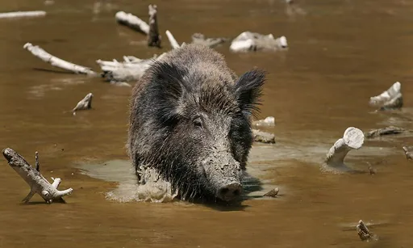
Boar boarCC BY-SA 2.5 · Richard Bartz, Munich Makro Freak · source 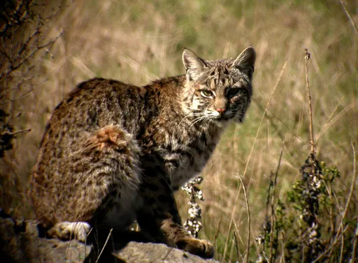
Bobcat bobcatCC BY 2.0 · Len Blumin · source 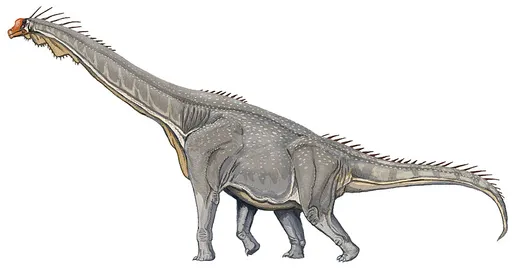
Brachiosaurus brachiosaurusPublic domain · Dmitry Bogdanov · source 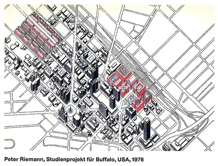
Buffalo buffaloCC BY-SA 4.0 · Peter Riemann · source 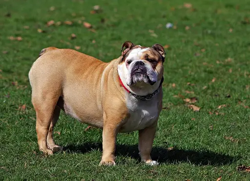
Bulldog bulldogCC0 · https://pixabay.com/pt/users/kaz-19203/ · source 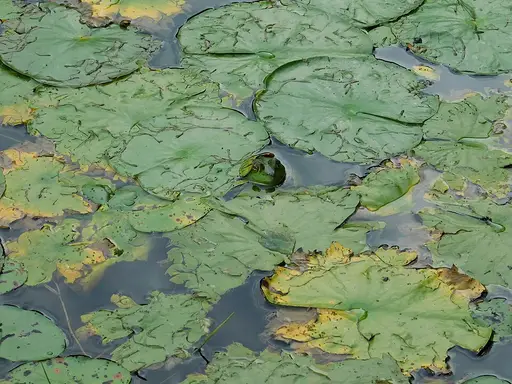
Bullfrog bullfrogCC BY 4.0 · Irishlefty24 (Mandy Coriston) · source 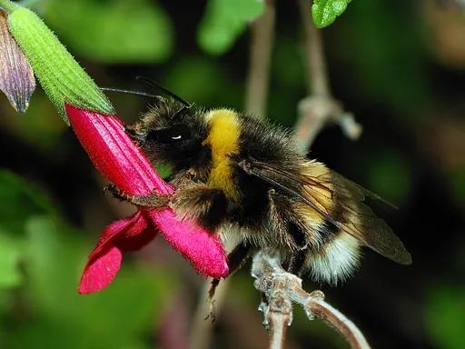
Bumblebee bumblebeeCC BY-SA 3.0 · Alvesgaspar · source 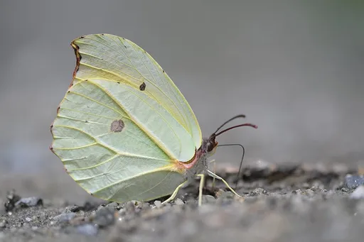
Butterfly butterflyCC BY-SA 4.0 · MaheshBaruahwildlife · source 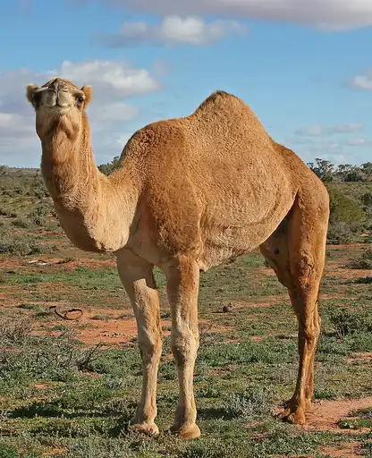
Camel camelCC BY-SA 3.0 · Jjron · source 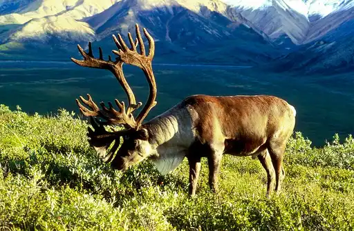
Caribou caribouPublic domain · Dean Biggins (U.S. Fish and Wildlife Service) · source 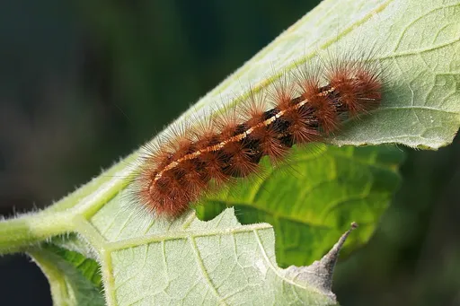
Caterpillar caterpillarCC BY-SA 3.0 · Toby Hudson · source 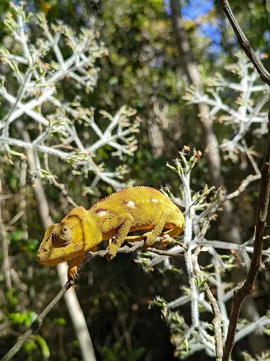
Chameleon chameleonCC BY-SA 4.0 · Liltsiry · source 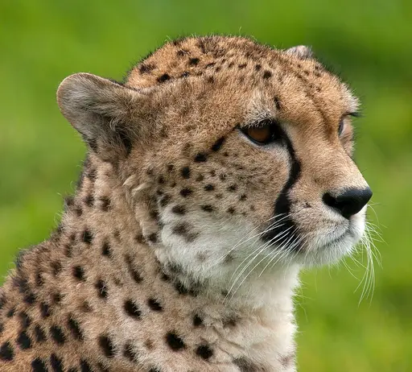
Cheetah cheetahCC BY 2.0 · William Warby · source 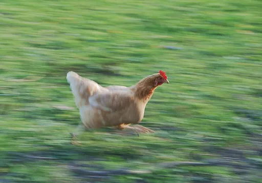
Chicken chickenCC BY-SA 3.0 · Alvesgaspar · source 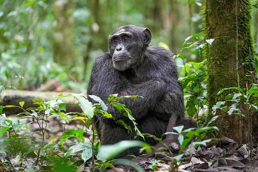
Chimpanzee chimpanzeeCC BY-SA 4.0 · Giles Laurent · source 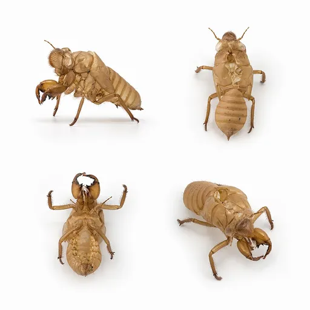
Cicada cicadaCC BY-SA 4.0 · Basile Morin · source 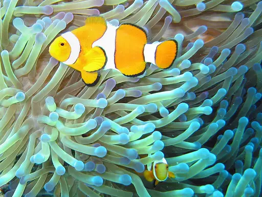
Clownfish clownfishPublic domain · Janderk · source 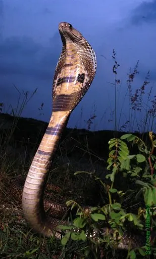
Cobra cobraCC BY 2.5 · Saleem Hameed · source 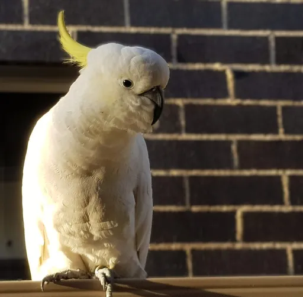
Cockatoo cockatooCC0 · Lunaseeker · source 1 2 3 4 5 6 7 8 9 10 11 12 13